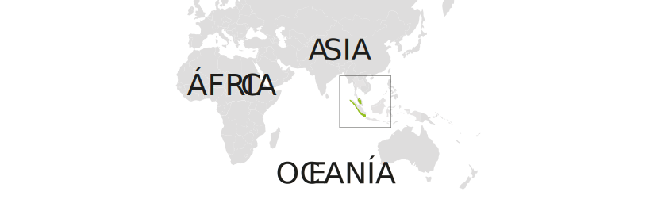
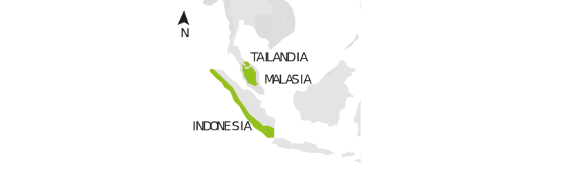
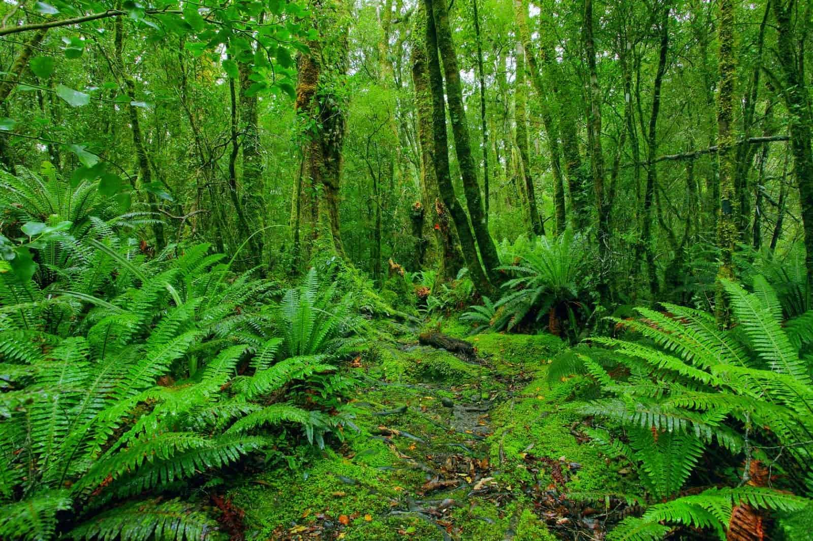
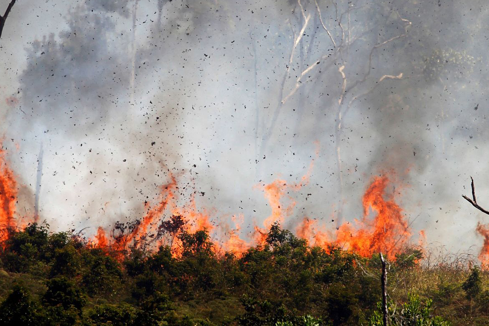

Ubicación en vida silvestre



Ciclo de vida
Esta especie practica la monogamia (vinculo no muy común en vida silvestre) y ambos sexos practican el cuidado parental. Esto se puede deber a que la hembra es dominante y el macho debe asegurar el cuidado y permanencia de su descendencia.
Actividad diaria
Los grándes árboles nativos de los bosques de Indonesia, Sumatra y Tailandia son indispensables para que el Siamang pueda realizar hábitos diarios como el acicalamiento y búsqueda de comida. Ante esto, la pérdida de flora que su hábitat ha sufrido en estos últimos años, está directamente relacionada con la declinación de su población.
Amenazas

